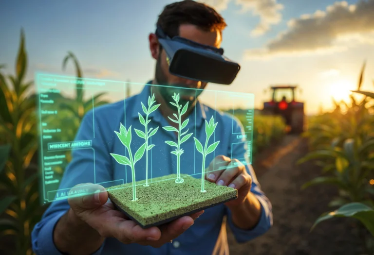
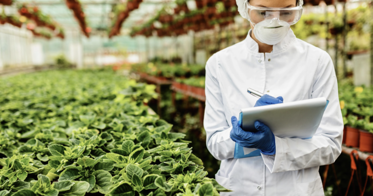

Conheça a verdadeira força do agronegócio brasileiro: o setor que movimenta a economia nacional, preserva florestas nativas e lidera a produção global de alimentos.
Com mais de 20% do PIB nacional e respondendo por um terço dos empregos no país, o agro brasileiro une produtividade em larga escala e segurança alimentar global.
Estados como Mato Grosso e Goiás lideram o volume total do país. A produção é baseada no plantio massivo de soja seguido imediatamente pelo milho safrinha. As propriedades utilizam frotas pesadas de colheitadeiras e focam fortemente na exportação direta via corredores logísticos rodoferroviários.
O Sudeste destaca-se pelo valor agregado de suas culturas. São Paulo comanda a produção de cana-de-açúcar, transformando a biomassa em etanol e energia limpa. Nas terras montanhosas de Minas Gerais e do Espírito Santo, o café brasileiro bate recordes mundiais de qualidade e grãos especiais certificados.
A região do MATOPIBA (Maranhão, Tocantins, Piauí e Bahia) expande o agronegócio no bioma Cerrado. Com relevo plano ideal para a mecanização e forte investimento em sementes e irrigação, a região atrai investimentos globais.
O modelo paranaense é referência internacional. Cooperativas transformam pequenas propriedades familiares em polos exportadores altamente eficientes e sustentáveis.
Bilionárias, estruturas como Coamo, Lar e C.Vale organizam o produtor rural e verticalizam a produção de alimentos.
Ver detalhes do modelo →O Oeste do Paraná lidera o abate e processamento integrado de suínos e aves, além do avanço gigante na piscicultura de tilápias.
Ver automação animal →A região de Castro e Carambeí destaca-se nacionalmente pela genética bovina holandesa e sistemas de ordenha computadorizados.
Ver tecnologia do leite →O agro forte do Brasil produz preservando. Conheça as técnicas que protegem o solo de ponta a ponta.
Diferente de outros países que reviram o solo deixando a terra desprotegida, o produtor brasileiro planta diretamente sobre a palha da colheita anterior. Essa camada orgânica protege o solo contra o impacto das chuvas fortes, elimina as erosões, segura a umidade e retém o carbono no chão.
O sistema combina a produção de grãos, carne e madeira na mesma fazenda. O gado pasta na sombra das árvores plantadas, o esterco dos animais aduba a lavoura de soja que virá depois, e as árvores sequestram gases poluentes. Essa técnica recupera pastagens degradadas.
O Brasil é líder internacional no uso de biológicos. Defensivos químicos pesados estão dando lugar a microrganismos, fungos benéficos e insetos predadores naturais criados em laboratório. Isso reduz custos e mantém o equilíbrio ecológico das fazendas.
Maquinários inteligentes e conectividade transformando fazendas em centros tecnológicos de alta performance.
Tratores, plantadeiras e pulverizadores operam guiados por GPS centimétrico. Os computadores de bordo aplicam sementes e fertilizantes em taxas variáveis, dosando a quantidade exata necessária para cada tipo de solo.
Equipados com sensores térmicos, os drones mapeiam as lavouras e geram dados precisos. A inteligência artificial analisa as imagens e aponta pragas ou falta de água antes que a plantação sofra.
Os mercados exigentes da Europa e Ásia conseguem escanear um QR Code e rastrear o trajeto do grão ou da carne desde a fazenda de origem, provando que o produto não veio de áreas desmatadas.

A pesquisa científica da EMBRAPA e o novo perfil do jovem gestor rural.

O Brasil transformou o solo do Cerrado de infértil para um dos maiores produtores do planeta graças à ciência da EMBRAPA e centros regionais como o IDR-Paraná. O desenvolvimento de sementes perfeitamente adaptadas ao nosso clima tropical é o pilar que garante safras recordes ano após ano.
A conectividade no campo mudou o perfil do produtor rural. A sucessão familiar agora traz jovens graduados de volta às propriedades rurais. O antigo agricultor deu lugar ao gestor de agronegócio, que controla custos em planilhas, gerencia equipes via aplicativos e analisa dados climáticos e de mercado em tempo real.
O segredo do sucesso paranaense está na verticalização industrial. Ao invés de vender apenas o grão bruto colhido com pequenas margens de lucro, o sistema une milhares de famílias associadas em estruturas que processam a soja em óleo refinado e o milho em ração.
Regiões como Toledo, Cascavel e Palotina abrigam os frigoríficos e complexos industriais de abate de aves e suínos mais tecnológicos da América Latina. Os galpões contam com automação completa e controle de climatização exato.
Os municípios de Castro e Carambeí formam a bacia leiteira padrão ouro do país, unindo alta genética bovina da raça holandesa e sistemas modernos de ordenha robotizada comandados por Big Data.